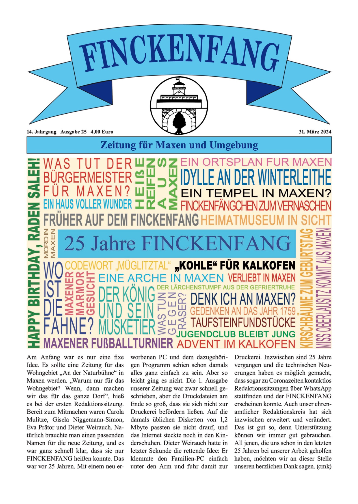
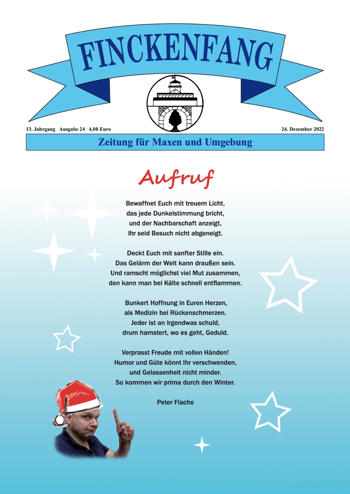
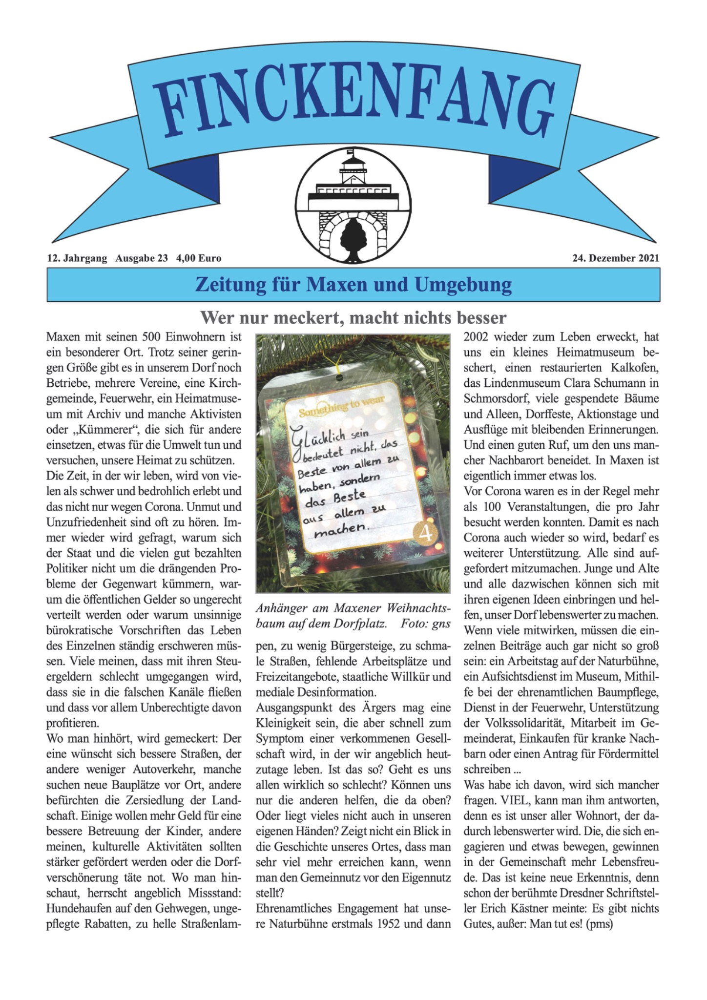
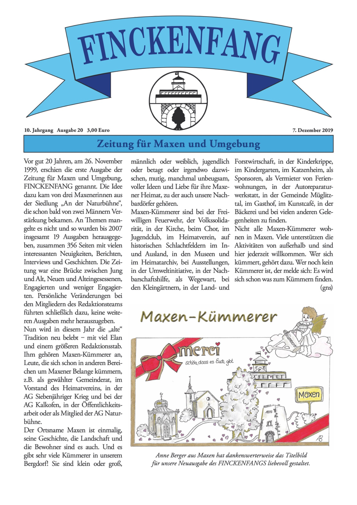

Die erste Ausgabe der Dorfzeitung „Finckenfang. Zeitung für Maxen und Umgebung“ erschien am 26. November 1999. Begründet wurde sie von Carola Mulitze, Dr. Gisela Niggemann-Simon und Eva-Maria Prätor.
Bis 2024 erschienen insgesamt 25 Ausgaben, die im Rückblick ein eindrucksvolles Zeugnis des dörflichen Lebens mit seinen vielfältigen Aktivitäten und besonderen Höhepunkten abgeben.
Einzelne Ausgaben der Zeitung sind bis heute auf Anfrage beim Verlag Niggemann & Simon erhältlich. Der Verlag ist bemüht, die Inhalte der Zeitung nach und nach auch an dieser Stelle online zugänglich zu machen.
Die Titelseiten lassen sich durch Anklicken vergrößern.




Bei Interesse an einer Ausgabe fragen Sie bitte beim Verlag nach, ob diese noch erhältlich ist.
Verfügbarkeit beim Verlag erfragen